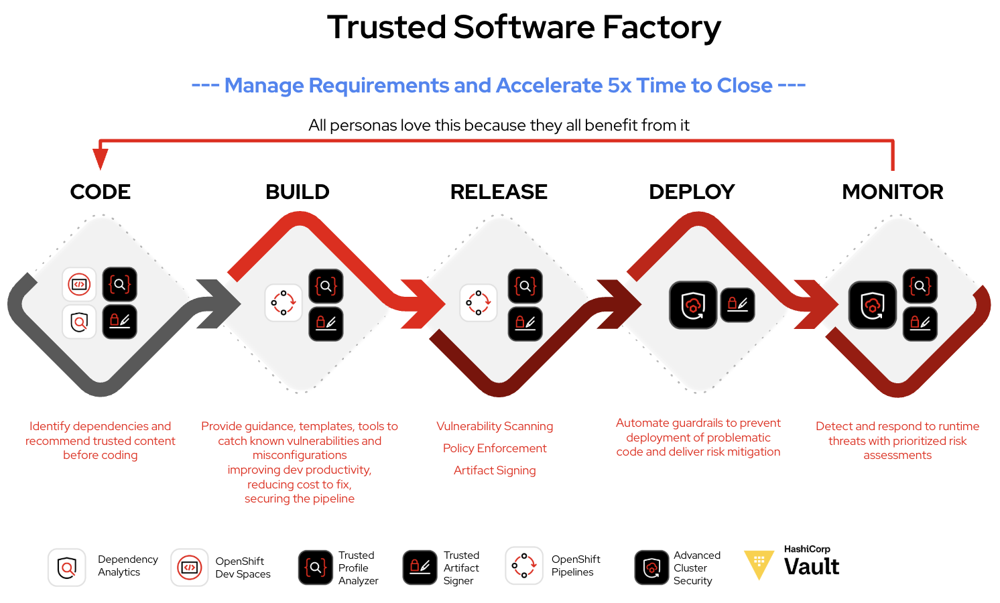

Introducing the Software Factory
In the previous module, you learned how an Application Platform provides the capabilities required to build, deploy, secure, and operate modern applications.
In this lesson, you’ll discover how organizations use those capabilities to create a Software Factory—a standardized software delivery process that enables developers to build and deliver applications quickly, securely, and consistently.
| As you progress through this lesson, think about how a new developer joins your organization today. How many manual steps are required before they can deploy their first application? |
The Challenge
Every development team wants to deliver software quickly.
Unfortunately, many organizations evolve over time, resulting in different teams using different tools, different processes, and different engineering practices.
A new developer joining the organization often needs to answer questions such as:
-
Which Git repository should I use?
-
Which build pipeline does this team use?
-
How do I deploy my application?
-
Where is the documentation?
-
Which security requirements must I follow?
-
Who do I contact if something goes wrong?
Instead of writing code, developers spend valuable time learning processes and integrating tools.
|
When every team builds its own software delivery process, developer onboarding becomes slower, operational complexity increases, and engineering practices become inconsistent. |
What is a Software Factory?
A Software Factory is a standardized approach for building, testing, securing, deploying, and operating software.
Rather than every development team assembling its own toolchain, Platform Engineers provide a curated platform that offers reusable services, automation, and organizational guardrails.
Developers simply consume these capabilities through a consistent self-service experience.

Software Delivery Lifecycle
As application code moves from development to production, the Software Factory performs many tasks automatically.
| Stage | Platform Activities |
|---|---|
Code |
Developers use standardized workspaces, templates, and source control. |
Build |
Applications are built, dependencies are validated, and security checks run automatically. |
Release |
Artifacts are signed, verified, and promoted according to organizational policies. |
Deploy |
Applications are deployed using automated pipelines and GitOps workflows. |
Monitor |
The platform continuously monitors application health, logs, and runtime behavior. |
Business Value
By standardizing software delivery, organizations gain:
-
Faster developer onboarding
-
Consistent engineering practices
-
Self-service development workflows
-
Built-in security and compliance
-
Automated software delivery
-
Reduced operational complexity
|
A Software Factory is not a single product. It is a standardized software delivery approach built on an Application Platform that combines automation, reusable services, and organizational best practices into a consistent developer experience. |
Reflection
Think about your own organization (Click to expand)
-
Does every development team follow the same software delivery process?
-
Which activities are already automated?
-
Which steps still require manual effort?
-
How could a standardized Software Factory improve developer productivity?
Check Your Understanding
Quiz Time! (Click to expand)
Which statement best describes a Software Factory?
-
Every development team builds and maintains its own toolchain.
-
A standardized platform that automates how software is built, secured, deployed, and operated.
-
A collection of independent tools managed separately by each team.
Answer
B — A Software Factory provides standardized workflows, automation, reusable services, and organizational guardrails for software delivery.